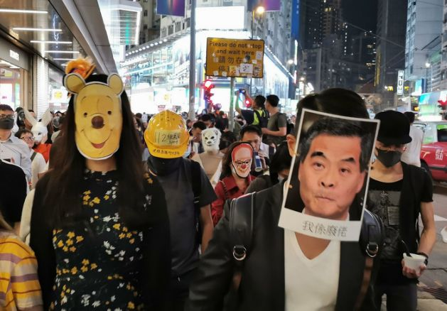
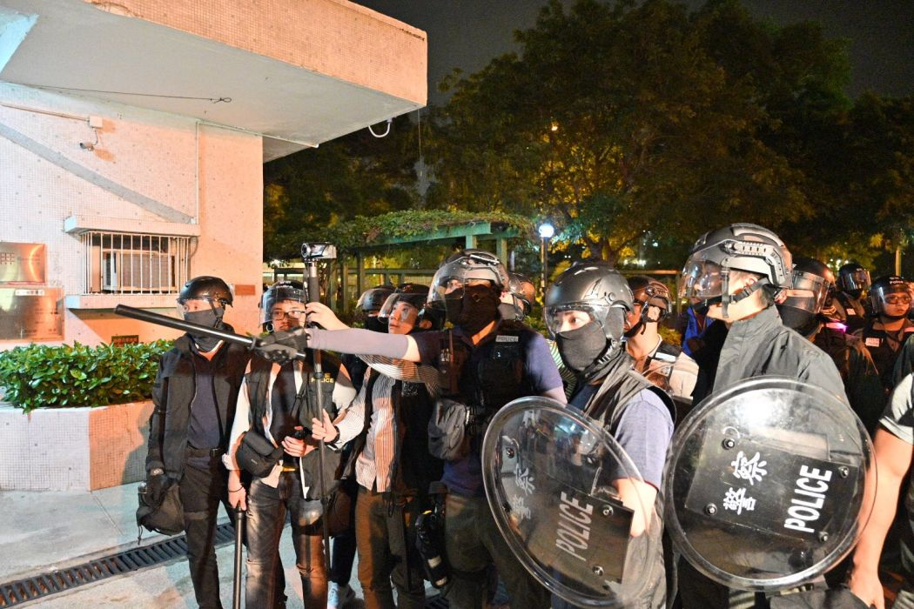
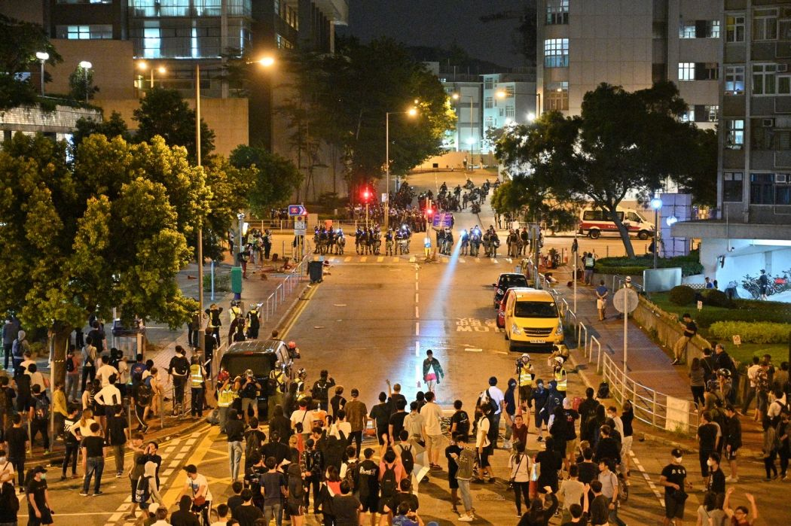

Current Events (Within a week)
October 31st

Some Hong Kongers called for another protest during Halloween, and asked all the participants to wear mask or something for Halloween in order to protest against the anti-mask law in Hong Kong. More...
October 30th

A second protest in response to the suspected tear gas leak occurred at night. More than 70 people, mostly Tuen Mun residents, were arrested. Man Shek Fong-yau, a former police constable who organised several pro-Beijing events, appeared outside the Tai Hing Operational Base at 8:30 pm with around 30 people. The group chanted the slogan "Hong Kong cockroaches, the vermin of the times", a play on the pro-democracy slogan "Liberate Hong Kong, the revolution of our times", and was seen arguing with residents. Residents refused to leave after police raised a blue warning flag stating that they were engaged in an unlawful assembly. Several black-clad protesters began to form roadblocks 20 minutes later. Police ordered residents to kneel down with their hands in the air or behind their backs at the lobby of Yat Sang House, Siu Hin Court. A man and a woman who appeared to taunt the police entered a Japanese restaurant in the area when officers tried to chase them. Two of the restaurant's shopkeepers refused to allow the police to enter the restaurant to arrest the pair. The police then pulled the shopkeepers out of the restaurant and arrested them, then ordered the original suspects to show their identification documents. At around midnight, protesters hurled petrol bombs at the police base, and the police responded by firing three bean bag rounds from inside the base. More...
October 28th

Many Tuen Mun residents reported an unknown irritating smell, suspected to be tear gas, starting from 4 pm. Smells that resemble that of tear gas were reported near Kin Sang Estate and Shek Pai stop; some people who felt unwell and were sent to hospital. Initially, firefighters suspected the smell to be the result of a chlorine leakage from Tuen Mun North West Swimming Pool, though staff at the swimming pool reported no gas leakage. It was later reported that the gas was leaked from Tai Hing Operational Base opposite Kin Sang Estate, though police denied that they had released any gas. In a joint statement, 10 District Council candidates from Tuen Mun condemned police for "neglecting the safety of local residents and testing tear gas near residential areas", requesting police to explain details of the situation and apologise to Tuen Mun residents. Roy Kwong, a Democratic member of the Legislative Council, said he had sent a letter to the Hong Kong Police Force requesting Commissioner of Police Stephen Lo to explain whether police leaked tear gas or related gases, suspecting that in such a case the health of local residents and animals would be adversely affected. More...